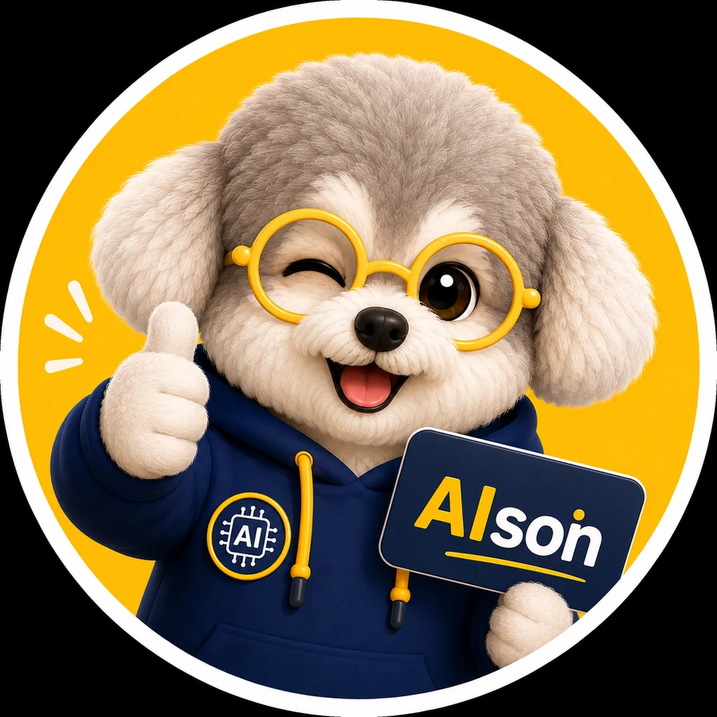

跳至主要內容

AI
son
每日 AI 新聞站
首頁
今日 AI 10 件事
主題追蹤
實用指南
新聞庫
關於 AIson
⌕
搜尋
☰
首頁
今日 AI 10 件事
主題追蹤
香港 AI 實用指南
新聞庫
關於 AIson
DAILY BRIEF
今日 AI 10 件事，
一頁睇晒。
每日早上更新 · 來源核實 · 香港視點
一鍵 Copy Threads 版本
只 Copy 10 個標題
分享總覽圖
查看總覽圖
列印 / PDF
×
SEARCH AISON
搜尋 AI 新聞
⌕